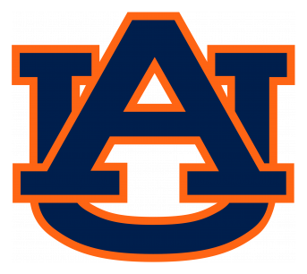
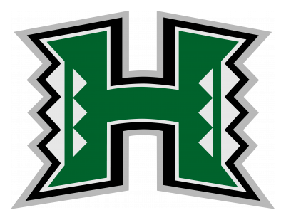
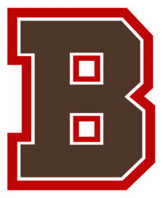
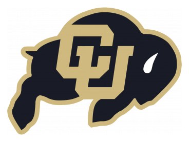
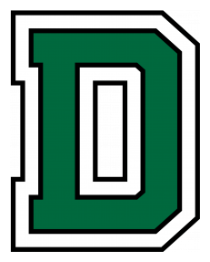

15 conferences · 180 teams · 2026 regular season
NCAA 180 Week 11
112.60Avg score
110.92Median
2Unbeaten
4Winless
Week 11 awards One winner across all 180
High score
213.40pts
Auburn
egbdf · SEC
over Vanderbilt


Biggest blowout
+131.86margin
Georgetown
ccassidy · Ivy
199.90–68.04 over Princeton


Closest game
0.48margin
Memphis
yoboihawks · Sun Belt
120.64–120.16 over Louisiana Tech

Bad beat
150.56pts in a loss
#8 Hawaii
RicochetRay · Mountain West
Lost to Colorado State, 162.80


Lucky win
54.92pts in a win
Iowa State
trev7293 · Big 12
Beat Texas Tech, 49.66


Low score
39.50pts
Duke
fatalbeast · ACC
vs. Clemson

Great coaching
99.6%of max points
Citadel
lmkl · Wild
130.30 of a possible 130.80; beat Central Arkansas by 67.54


Biggest upset
27%pregame win chance
Kennesaw State
srcav · Ohio Valley
Beat Delaware 104.90–95.00


Exceeding expectations
+65.68pts over projection
Auburn
egbdf · SEC
Scored 213.40, projected 147.72 at kickoff
You beat yourself
105.04pts left
Central Arkansas
MrBarryMcCockiner · Wild
Scored 62.76, best lineup 167.80, lost to Citadel 130.30


Top 25 Score (first-place votes)
| Rk | Team | Score | |||
|---|---|---|---|---|---|
| 1 | ▲1 |   | Iowa10-1 · Big Ten | +1.78 | |
| 2 | ▼1 |   | Washington State11-0 · Pac-12 | +1.76 | (3) |
| 3 | – |   | Brown9-2 · Ivy | +1.75 | |
| 4 | – |   | Baylor9-2 · Big 12 | +1.75 | |
| 5 | – |   | Syracuse9-2 · Big East | +1.71 | (2) |
| 6 | ▲3 |   | Arizona State9-2 · Pac-12 | +1.66 | (1) |
| 7 | – |  | Clemson10-1 · ACC | +1.63 | |
| 8 | ▲2 |   | William & Mary9-2 · Big Sky | +1.62 | |
| 9 | ▼3 |   | Middle Tennessee State11-0 · CUSA | +1.57 | |
| 10 | ▲2 |   | Youngstown State10-1 · Big Sky | +1.52 | (1) |
| 11 | ▲2 |   | Campbell10-1 · Pioneer | +1.49 | |
| 12 | ▼1 |   | Old Dominion10-1 · Wild | +1.42 | |
| 13 | ▼5 | | Hawaii8-3 · Mountain West | +1.41 | |
| 14 | ▲2 |   | Portland State8-3 · Big Sky | +1.39 | (1) |
| 15 | – |   | Colorado10-1 · Pac-12 | +1.30 | |
| 16 | ▲4 |  | ETSU8-3 · Ohio Valley | +1.28 | |
| 17 | ▲6 |   | Georgia State8-3 · CUSA | +1.26 | |
| 18 | ▼4 |   | Kentucky10-1 · SEC | +1.25 | |
| 19 | – |   | BYU9-2 · Mountain West | +1.24 | |
| 20 | ▼3 |   | UNLV10-1 · Mountain West | +1.22 | |
| 21 | – |   | NC State9-2 · ACC | +1.21 | |
| 22 | ▼4 |   | Southern Miss9-2 · Sun Belt | +1.18 | |
| 23 | NEW | | Georgetown8-3 · Ivy | +1.17 | |
| 24 | – |   | North Alabama7-4 · Ohio Valley | +1.16 | |
| 25 | NEW |   | Dartmouth9-2 · Ivy | +1.15 |
Others receiving votes: Auburn +1.13, Tulsa +1.13, Minnesota +1.11, North Carolina A&T +1.09, Fresno State +0.99, Montana State +0.97, Montana +0.96, Southern +0.95, Colorado State +0.87, Memphis +0.84, Mississippi State +0.81, Missouri +0.78, Army +0.65
Dropped out: Kansas State, Minnesota
Full pollTop scores Week 11
- 1Auburnegbdf · SEC · def. Vanderbilt213.40
- 2Georgetownccassidy · Ivy · def. Princeton199.90
- 3#20 ETSULMarkiewicz04 · Ohio Valley · def. Morehead State186.36
- 4#5 SyracuseCodeKhaos · Big East · def. Coastal Carolina172.70
- 5Fresno StateVikes1819 · Mountain West · def. Nevada172.56
- 6#3 BrownFlynnD · Ivy · def. Columbia170.80
- 7#9 Arizona Statewrightc214 · Pac-12 · def. California168.16
- 8TulsaRaidersforte · Sun Belt · def. Marshall165.24
- 9ColgatePhilupMynuts · Ivy · def. Yale163.06
- 10Colorado Statebkoldham · Mountain West · def. Hawaii162.80
Conference average Pts per team
- Ivy121.9
- Mountain West121.2
- Pac-12118.8
- Ohio Valley118.8
- CUSA115.8
- Big East115.7
- Big Ten115.1
- Pioneer111.5
- Big Sky110.9
- ACC110.4
- Wild109.8
- SEC107.9
- Sun Belt107.6
- Big 12107.0
- HBCU96.5
Bars start at 91 points.
Top starters By position
- QBDak PrescottDAL · started in 10 of 15 leagues35.90
- RBJonah ColemanDEN · started in 11 of 15 leagues34.90
- WRCeeDee LambDAL · started in 15 of 15 leagues30.20
- TETravis KelceKC · started in 12 of 15 leagues25.40
- KDrew StevensWAS · started in 4 of 15 leagues18.00
- DEFChicago BearsCHI · started in 4 of 15 leagues16.00